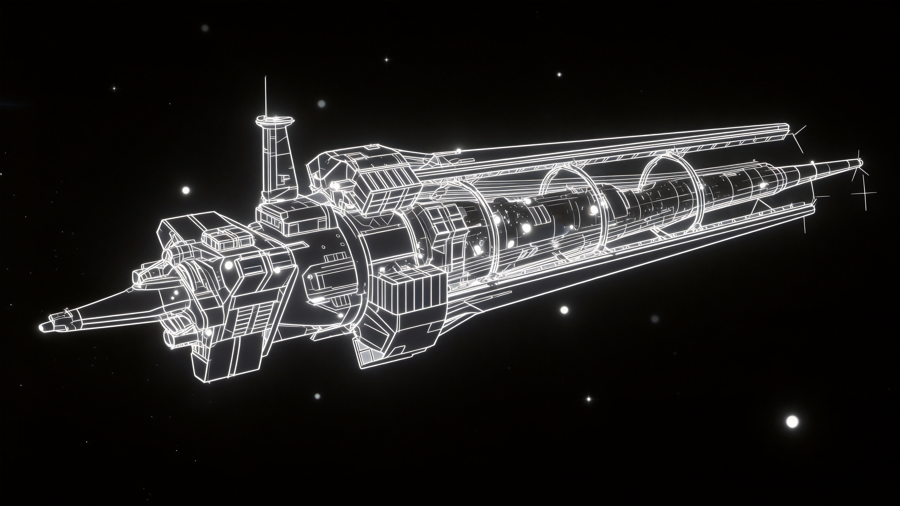
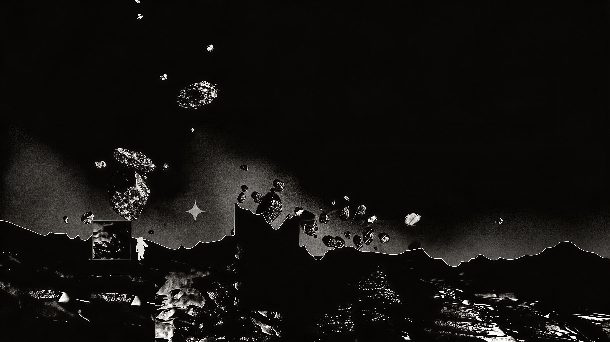

点击任意处 · 聆听方舟序曲
曲速跳跃中...

右键 切换光谱扫描 · 透视底层界面
已解锁的结局记录。回溯星图可探索更多分支。
免费方案：在讯飞控制台领取 Lite 额度，复制 WebSocket 鉴权信息（APPID、APIKey、APISecret）粘贴到下方并保存。 浏览器通过 WebSocket 直连，无 CORS 问题，无需 CloudBase。密钥只存在本机浏览器。
未配置 WebSocket 密钥
未配置代理
等待信号接入...
📷 手势物理验证
节点 24 视频结束后将自动启用手势抉择（警惕 / 握上）。开始界面可用手势实时检测测试。
BIOMETRIC SCAN · ARK PROTOCOL
新人类伸出了手。比出手枪手势 → 警惕；伸手握手 → 握上。
LIVE FEED
正在初始化…
—
手动确认
QUANTUM LINK · 方舟号
链路就绪